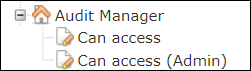

The control of permissions (who can do what) in Audit Manager is managed in Access Control Manager (). The Access Control Manager administrator grants permissions to the different user roles/organizations that can access functions in Audit Manager.
You grant permissions to a user role/organization for the application. For a description of how to grant permissions to user roles/organizations, refer to Manage Function Privileges and Data Access Permissions.
Read, Write, and Delete permissions must be granted for the nodes below the Audit Manager privilege tree.

Audit Manager Privilege Tree
This table describes the privilege tree and effect of assigning Read, Write, and Delete permission to each of the nodes.
| Panel (top level > sub levels) | Description |
|---|---|
| Application > Can access | Grant Read permission to log into the Audit Manager
application. The user account must be a member of a role configured with READ
access. Note: If the user can access the Audit Manager application, they have
access to all functionality.
|
| Application > Can access (Admin) | Not currently available. |